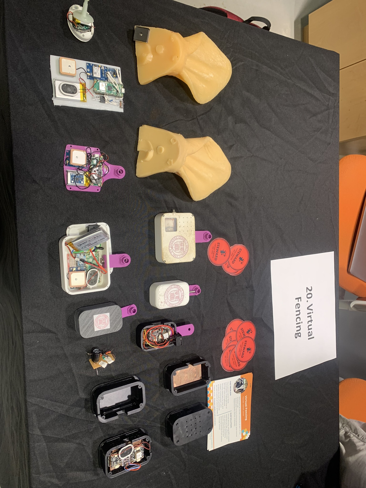

Virtual Fencing
GPS-based virtual boundary system + iterative ear-tag CAD + electric stimuli prototyping
Explore project ↗Explore mechanical design, robotics, manufacturing and engineering case studies.

GPS-based virtual boundary system + iterative ear-tag CAD + electric stimuli prototyping
Explore project ↗
Cooperative 1D color-matching game
Explore project ↗Two research projects: a motorized VAM mechanical test bed and LabVIEW automation for a Thorlabs rotation stage.
Explore project ↗
Turbine Blade Optimization
Explore project ↗Exploring adjustable acoustic attenuation while minimizing playing resistance.
Explore project ↗Mechanical design of an extendable vegetation cutter and drivetrain interfaces for an aquatic platform.
Explore project ↗Embedded software, wireless communication and robotic sensing developed through Cornell’s Fast Robots course.
Explore project ↗Hands-on machining, technical instruction and training resources supporting more than 100 Cornell engineering students.
Explore project ↗
Boeing 737 MAX & MCAS
Explore project ↗